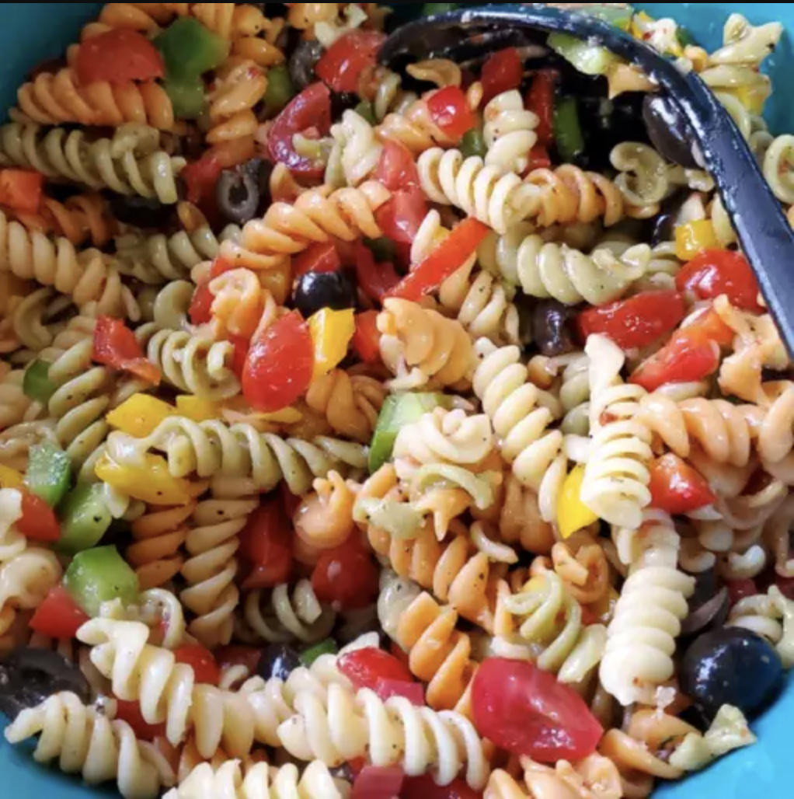

Pasta Salad

How to Make Pasta Salad
You'll find a detailed ingredient list and step-by-step instructions in the recipe below, but let's go over the basics:
Ingredients:
- Pasta
- Dressing
- Seasoning mix
- Vegetables
Steps:
- Cock and drain the pasta
- Whisk the dressing with the seasoning mix
- Combnine the pasta with the vegetables, then toss in the seasoned dressing
Return to main page